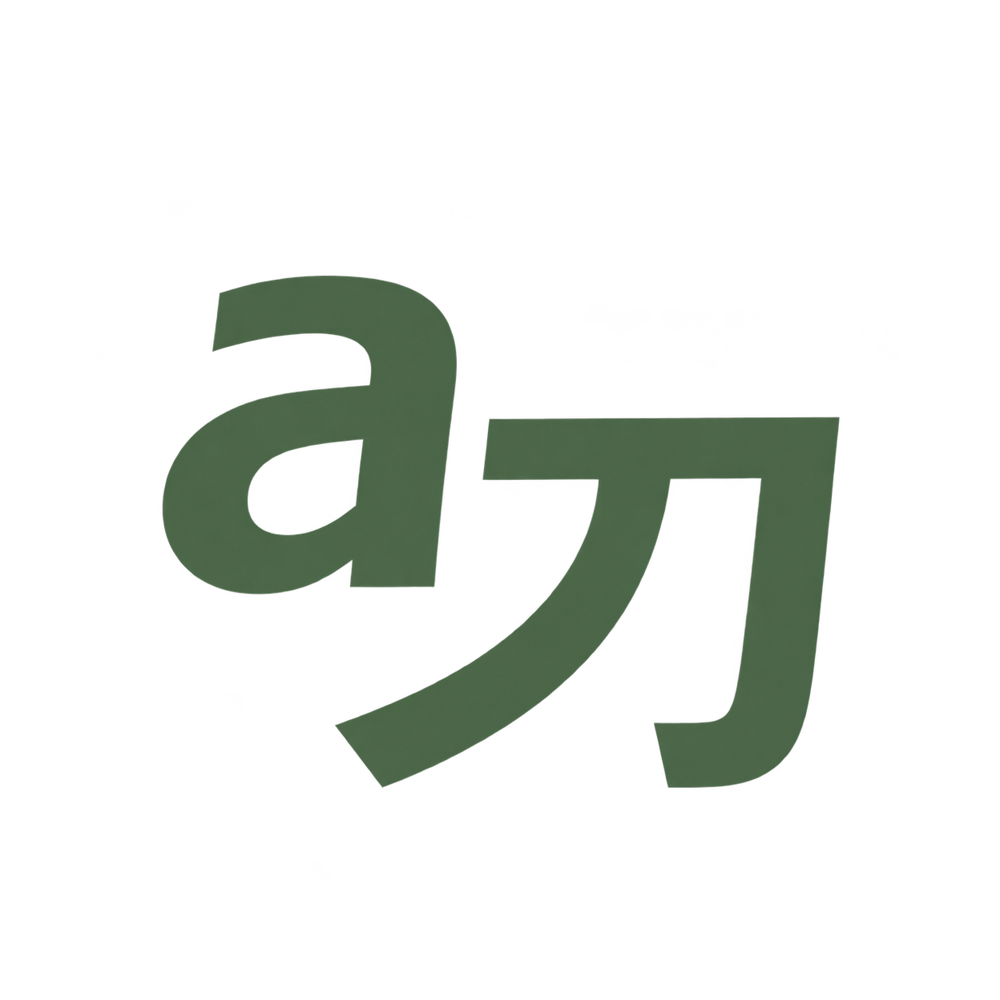
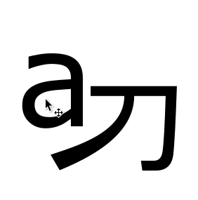
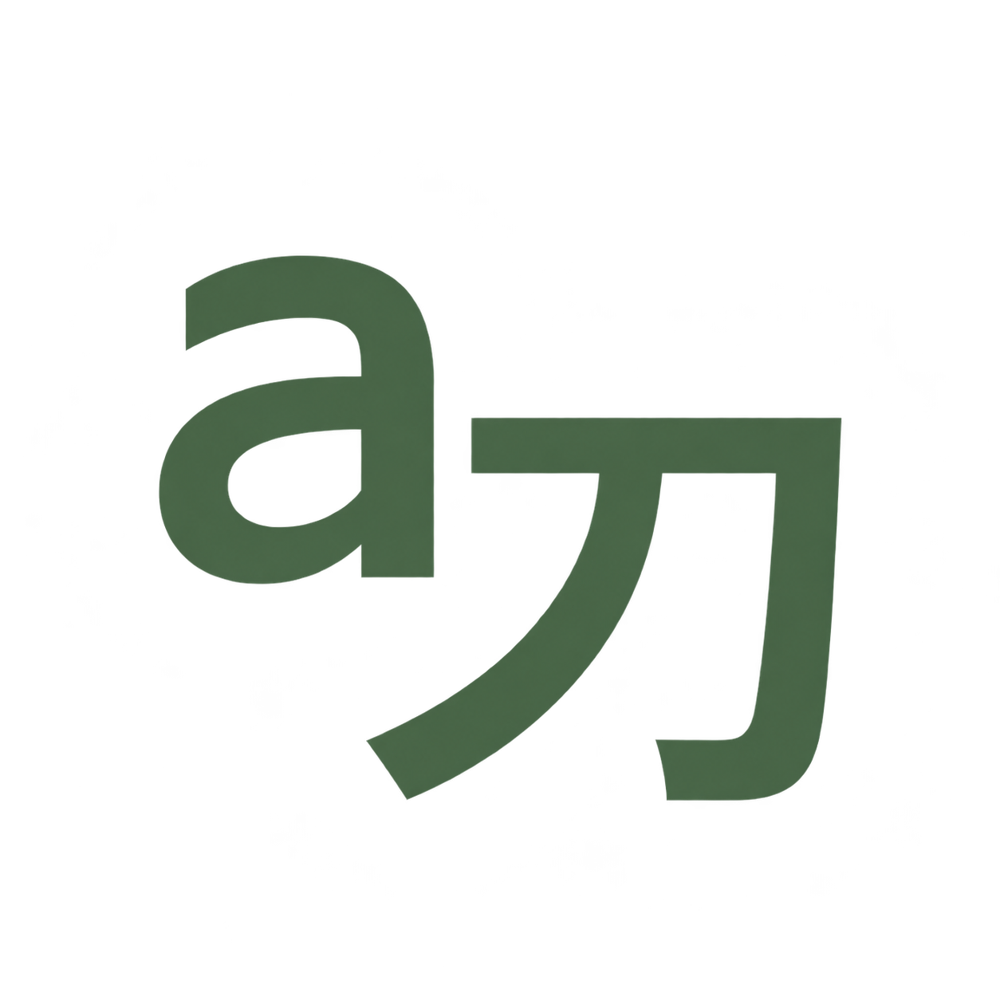
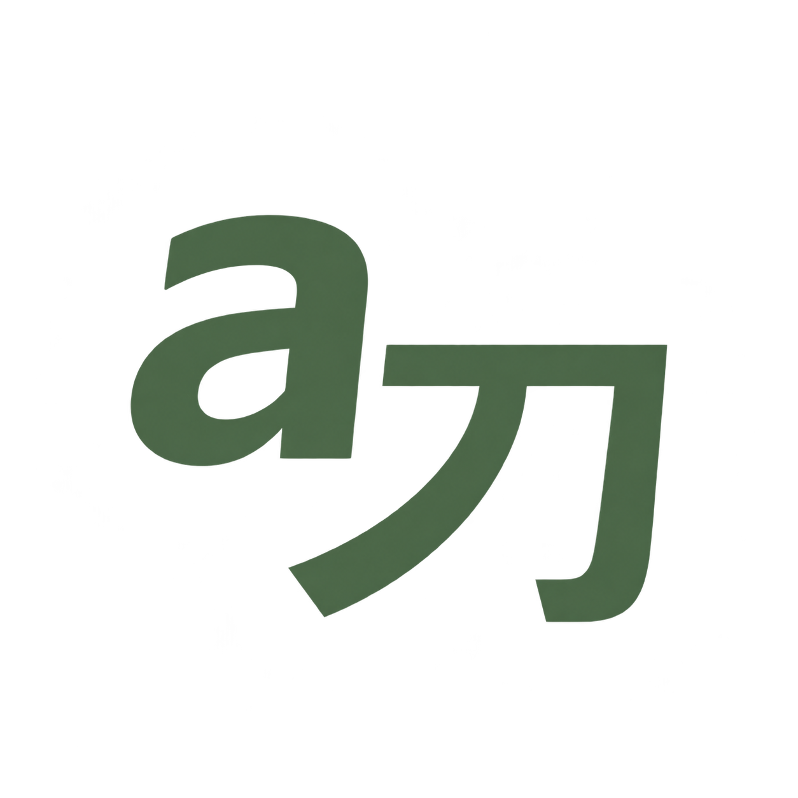
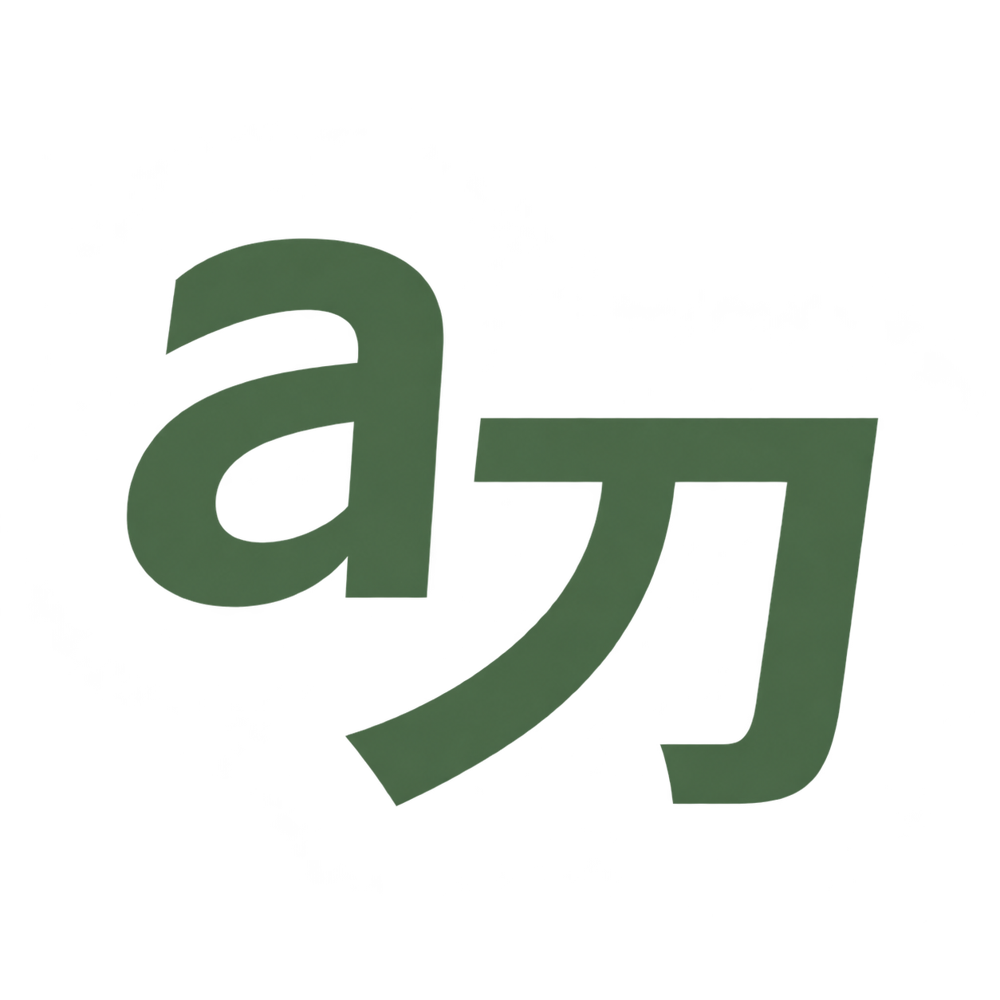
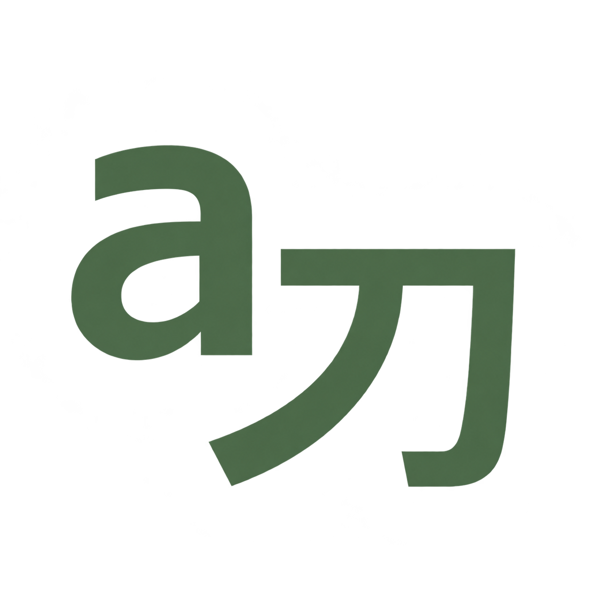
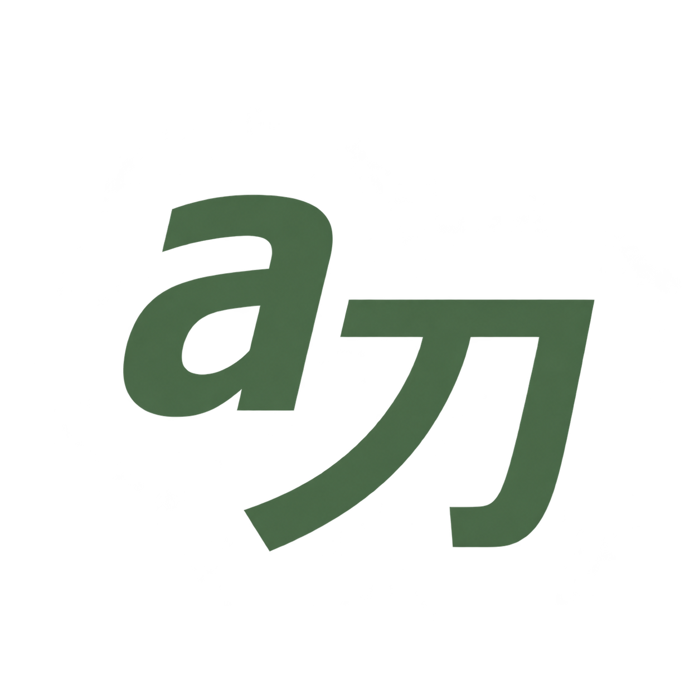

SMALL-SIZE PREVIEW
HOME / ホーム
HOME / ホーム
01
AINKUN / ロゴ / LOGO EXPLORATION
A distinct lowercase a and an almost equally tall Japanese 刀, slightly staggered just like your reference. Six clean sans-serif treatments to match the portfolio. Choose the lettering first; morning, evening, and night colors come after.







Open curves and a subtle forward lean, with a small gold accent.
Download transparent PNG ↗Precise geometry and a clear silhouette for small navigation sizes.
Download transparent PNG ↗All six use the same forest green so you can compare shape, weight, and spacing. Each download has a transparent background. Typography is generated to echo the website fonts.